Under Review
| 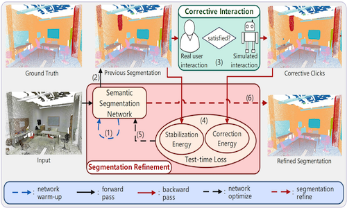 | Refining Segmentation On-the-Fly: An Interactive Framework for Point Cloud Semantic Segmentation |
Preprints
| 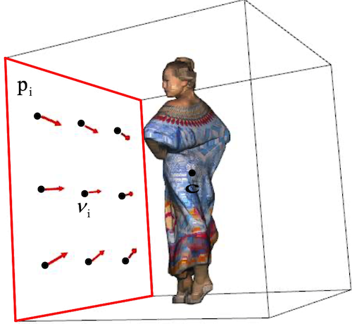 | The Worse The Better: Content-Aware Viewpoint Generation Network for Projection-related Point Cloud Quality Assessment |
| 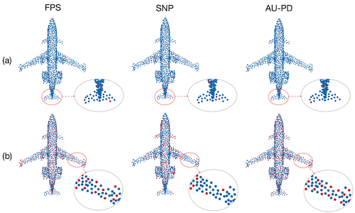 | AU-PD: An Arbitrary-size and Uniform Downsampling Framework for Point Clouds |
 |
No-reference Point Cloud Geometry Quality Assessment Based on Pairwise Rank Learning |
2025
| 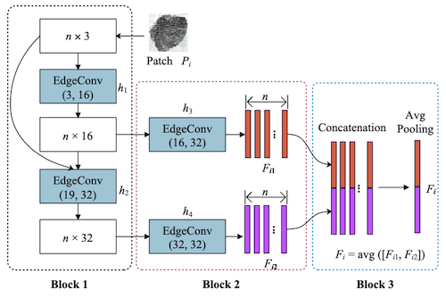 | No-reference Geometry Quality Assessment for Point Clouds Via List-wise Rank Learning |
Hypergraph Convolutional Network based Weakly Supervised Point Cloud Semantic Segmentation with Scene-Level Annotations |
| 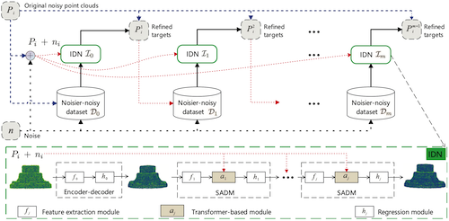 | SITF: A Self-Supervised Iterative Training Framework for Point Cloud Denoising |
2024
| 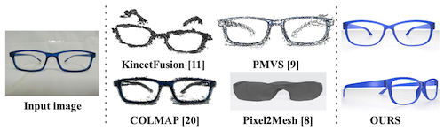 | Mesh Deformation-Based Single-View 3D Reconstruction of Thin Eyeglasses Frames with Differentiable Rendering |
| 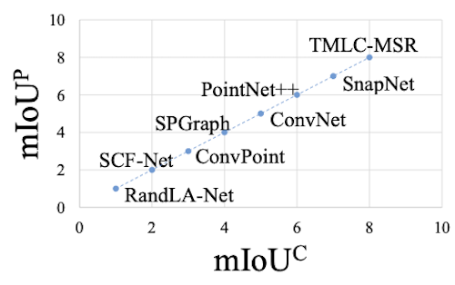 | Fine-grained Metrics for Point Cloud Semantic Segmentation |
2023
| 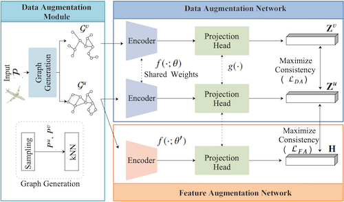 | Joint Data and Feature Augmentation for Self-Supervised Representation Learning on Point Clouds |
| 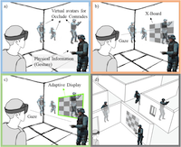 | X-Board: an egocentric adaptive AR assistant for perception in indoor environments |
Video Driven Adaptive Grasp Planning of Virtual Hand Using Deep Reinforcement Learning |
结合伪标签生成与噪声标签学习的弱监督点云分割 |
2022
 |
Slicing-Tracking-Detection: Simultaneous Multi-Cylinder Detection from Large-scale and Complex Point Clouds |
| 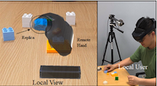 | Imitative Collaboration: A mirror-neuron inspired mixed reality collaboration method with remote hands and local replicas |
Structure-Aware Denoising for Real-world Noisy Point Clouds with Complex Structures |
Point cloud denoising review: from classical to state-of-the-art approaches |
A Weakly Supervised Framework for Real-world Point Cloud Classification |
A Novel Animation Authoring Framework for the Virtual Teacher Performing Experiment in Mixed Reality |
 |
面向移动增强现实的室外阴影实时检测技术 |
2021
 |
Learning to Hash for Personalized Image Authentication |
An Augmented Reality-based Multimedia Environment for Experimental Education |
基于投票决策的实时遮挡处理技术 |
基于深度强化学习的虚拟手自适应抓取研究 |
面向AR虚拟沙盘的虚拟化身定位定向技术研究 |
2020
Partial Matching of Large Scale Process Plant Models Using Random Walk on Graphs |
| 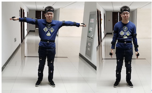 | 面向AR虚实士兵对抗训练的分布式感知技术 |
2019
面向虚拟化身的人脸表情模拟技术 |
面向AR沙盘异地协同标绘的动作重构技术 |
船载天线雷达系统优化建模与仿真研究 |
2018
 |
Robust 2D Engineering CAD Graphics Hashing for Joint Topology and Geometry Authentication via Covariance-Based Descriptors |
 |
基于哈希的二维工程CAD图纸检索技术 |
2017
 |
A Unified Framework for Authenticating Topology Integrity of 2D Heterogeneous Engineering CAD Drawings |
Topology based 2D engineering drawing and 3D model matching for process plant |
面向二维工程CAD图的拓扑完整性校验算法 |
基于哈希的二维工程CAD图拓扑关系认证技术 |
~ 2016
 |
Topology Authentication for Piping Isometric Drawings |
 |
Authenticating topological integrity of process plant models through digital watermarking |
 |
Watermarking 3D CAPD models for topology verification |
 |
Topology authentication for CAPD models based on Laplacian coordinates |
无人机协同路径规划三维实时可视化仿真平台 |
强激光武器协同防空作战仿真系统设计 |
流程工厂设计中的规则挖掘与智能预测 |
 |
基于编辑距离的大规模流程工厂模型局部检索算法 |
基于单视点视频的舰艇尾浪三维重建 |
火箭运输船协同吊装模拟训练系统的研究与实现 |